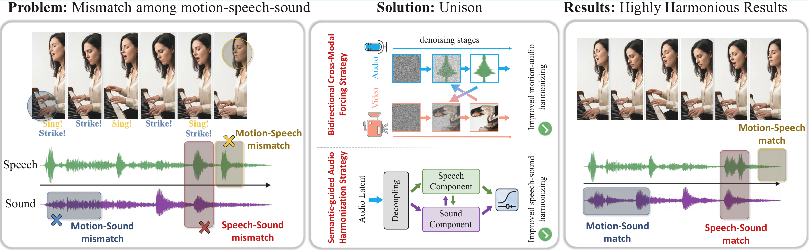
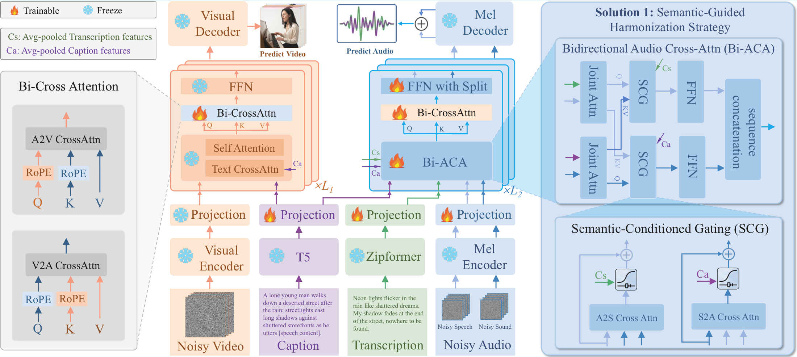
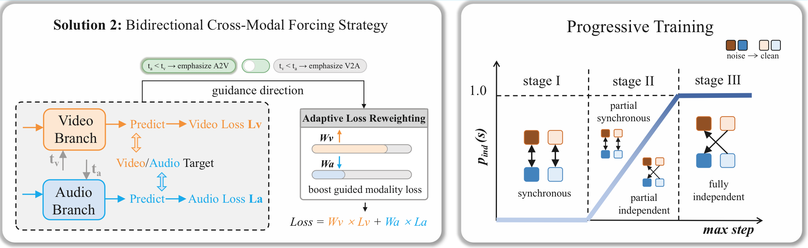
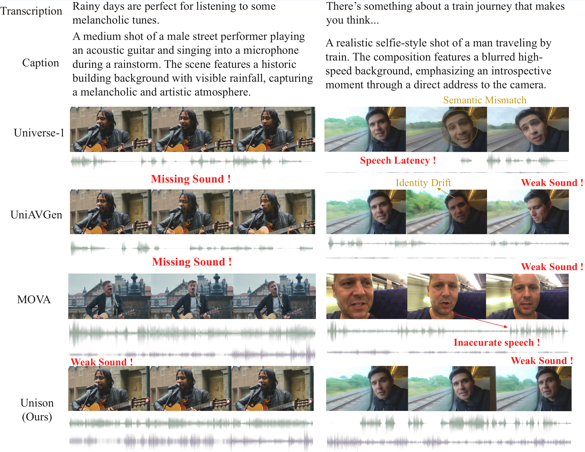

ECCV 2026
★Equal contribution †Project leader ‡Corresponding author

Overview of the key challenges and our approach. Left: two major misalignments in human-centric audio-video generation — speech–sound interference within the audio stream and motion–audio desynchronization. Middle: our Unison framework resolves these via a semantic-guided harmonization strategy and a progressive audio-video forcing strategy. Right: these designs jointly reduce speech dominance, preserve sound effects, and achieve coherent motion–audio synchronization.
Motion, speech, and sound effects are fundamental elements of human-centric videos, yet their heterogeneous temporal characteristics make joint generation highly challenging. Existing audio-video generation models often fail to maintain consistent alignment across these modalities, leading to noticeable mismatches between motion, speech, and environmental sounds. We present Unison, a unified framework that explicitly promotes coherence across the motion, speech, and sound modalities. Within the audio stream, Unison employs a semantic-guided harmonization strategy that decouples the generation of speech and sound-effect components. Leveraging bidirectional audio cross-attention and semantic-conditioned gating for semantic-driven adaptive recomposition, this approach effectively mitigates speech dominance and enhances acoustic clarity. For audio–motion synchronization, we propose a bidirectional cross-modal forcing strategy where the cleaner modality guides the noisier one through decoupled denoising schedules, reinforced by a progressive stabilization strategy. Extensive experiments demonstrate that Unison achieves state-of-the-art performance in both audio perceptual quality and cross-modal synchronization, highlighting the importance of explicit multimodal harmonization in human-centric video generation.

Overview of Unison. Unison couples a video branch and an audio branch via frame-level bidirectional cross-attention. The audio branch performs independent speech and sound-effect generation through a Semantic-Guided Harmonization Strategy, using a Bidirectional Audio Cross-Attention (Bi-ACA) module and a Semantic-Conditioned Gating (SCG) mechanism.
Decouples speech and sound-effect generation. A Bidirectional Audio Cross-Attention (Bi-ACA) module mutually refines the two streams, while Semantic-Conditioned Gating (SCG) adaptively balances them from caption and transcription semantics — preventing speech from overshadowing environmental sounds.
Decouples the denoising timesteps of video and audio so the cleaner modality guides the noisier one. Direction-aware loss reweighting strengthens the mutual dependency between motion and audio for robust temporal synchronization.
A three-stage curriculum — synchronous warmup, incremental decoupling, and full independence — gradually introduces cross-modal noise disparities for stable optimization and precise alignment.

Bidirectional Cross-Modal Forcing. By decoupling diffusion timesteps during training, the modality at a lower noise level provides enhanced conditioning to steer the noisier counterpart. A three-stage curriculum progresses from synchronous warmup to full temporal independence.
Quantitative comparison with state-of-the-art methods on video quality, audio fidelity, and cross-modal consistency. Best in bold, second-best underlined.
| Type | Model | VA ↑ | ID ↑ | PQ ↑ | CU ↑ | WER ↓ | AV ↑ | LSE-C ↑ | DS ↓ |
|---|---|---|---|---|---|---|---|---|---|
| TI2AV | Universe-1 | 3.77 | 4.42 | 5.95 | 5.21 | 0.52 | 0.62 | 2.32 | 0.50 |
| Ovi | 3.94 | 4.42 | 6.25 | 5.51 | 0.43 | 0.87 | 2.81 | 0.12 | |
| UniAVGen | 4.02 | 4.46 | 6.18 | 5.48 | 0.33 | 0.81 | 2.89 | 0.15 | |
| MOVA | 4.01 | 4.52 | 6.28 | 5.52 | 0.29 | 0.88 | 3.24 | 0.13 | |
| LTX-2 | 4.15 | 4.61 | 6.30 | 5.58 | 0.25 | 0.89 | 3.45 | 0.10 | |
| Unison (Ours) | 4.02 | 4.53 | 6.34 | 5.61 | 0.22 | 0.91 | 3.30 | 0.08 |
Despite a 5B video backbone (≈4× smaller than LTX-2's 19B), Unison leads in audio fidelity (PQ, CU, WER) and cross-modal synchronization (AV, DS).

Qualitative comparison against Universe-1, UniAVGen and MOVA. Unison achieves precise synchronization between motion and diverse acoustic components, with superior acoustic layering — intelligible speech without suppressing salient environmental audio.
@inproceedings{cheng2026unisonharmonizingmotionspeech,
title = {Unison: Harmonizing Motion, Speech, and Sound for Human-Centric Audio-Video Generation},
author = {Cheng, Shihao and Zhang, Jiaxu and Song, Quanyue and Liu, Shansong and Guo, Zhizhi and Zhang, Xiaolei and Zhang, Chi and Li, Xuelong and Tu, Zhigang},
booktitle = {European Conference on Computer Vision (ECCV)},
year = {2026},
archiveprefix = {arXiv},
primaryclass = {cs.CV},
url = {https://arxiv.org/abs/2605.08729},
}